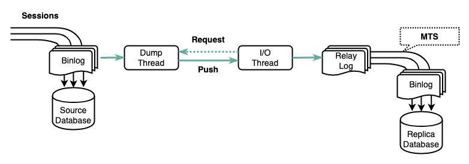

Ch06-MySQL 之 复制技术
April 10, 2022
我们习惯把 MySQL 复制中的角色叫做 Master/Slave，MySQL 8.0 后，术语和命令上都会统一到 Source/Replica。MySQL 采用 log shipping 的复制技术，在 source 节点上生成 binlog，通过 dump 线程把 binlog 推到 replica 节点上，replica 节点首先把 binlog 存储到 relay log 中，然后通过 MTS(Multi-Threaded Slave) 技术 replay 到 replica 节点上的表空间。
复制主要的作用体现为：提升可用性；提升读扩展能力；提升数据持久性保证；提升事务提交性能。

在 MySQL 的演进迭代过程中，有三种复制模式和五种 MTS 技术。实际应用中，一般是一种复制模式和一种或者多种 MTS 技术组合在一起的。
1. 五种 MTS 技术 #
| MTS | Remark |
|---|---|
| Single Thread Slave (STS) | 在 replica 上从 replay log 回放到 replica 表空间只有一个线程，主要存在于 MySQL 5.6.2 之前。这个时期复制延迟通常很大，因为主/从数据库的并发度差距很大。 |
| Schema based MTS (SB-MTS) | MySQL 5.6.3 引入。多个 schema(MySQL 中等同于 database) 之间可以并发的回放 replay log 到 replica 表空间。 |
| Logical Clock based MTS (LC-MTS) | MySQL 5.7.2 引入。MySQL 主库上为了提升 I/O 的利用率，采用了 group commit 的技术，简单理解就是把多个小 I/O 聚合成一个大 I/O，去分担存储设备寻道的开销（SSD 没有磁道的概念，但小 I/O 据称的收益依然非常可观）。一批可以 group commit 的事务，读写的数据集是没有冲突的，LC-MTS 正是利用了这个特点，在 repliac 上同一个 group commit 中多个事务可以并行的回放。 |
| Lock Interval based MTS (LI-MTS) | MySQL 5.7.6 引入，在 LC-MTS 的基础上进行了进一步的优化，将同一个 group 中补充的事务并行化。推导逻辑是：只要两个事务可以同时获得锁，说明他们读写的资源是不冲突的，因此就可以并行回放。 |
| Writeset based MTS (WS-MTS) | MySQL 5.7.22 引入，之前 MTS 技术都依赖 source 节点上运行态的情况实施并发策略，但 WS-MTS 把并发回放的策略细类度到数据本身，两个事务读写的数据集没有交集，就可以并行回放。 |
2. 三种复制模式 #
| Replication | Remark |
|---|---|
| Asynchronous replication | dump 线程只管把 binlog 发送到 replica 节点，不等待 replica 的 ACK。因此主/从同步的差距依赖主/从之间的网络状况，也依赖 replica 上写入 replay log 的速度，更依赖 replica 节点上采用了那种 MTS 技术。Relay log 回放完成后，数据对向 replica 发起的查询才可见。 |
| Semi-sync replication | Source 节点写入 binlog 后、事务提交之前，会等待一定数量的 replica ACK。这样保证一个事务 ACK 给 client 之后，即便发生 source 节点永久宕机，事务也不会丢失。 |
| Group replication (MGR) | Source 节点先在本地乐观地执行事务，在准备提交之前，会把事务涉及到的改变行和 writeset 通过原子广播 (通过 paxos 协议的变种 mencius 协议实现) 发送到所有的节点上，每一个节点独立进行 certification，certification 通过则继续事务的提交 (事务发起节点写入 binlog 后完成 commit，其他节点写入 relay log，采用 WS-MTS 并行回放策略回放到各自的表空间)，失败则回滚事务。关键点是通过基于 paxos 的原子广播确定事务提交的顺序，以及通过 WS-MTS 进行事务回放到本地数据库表空间。 |